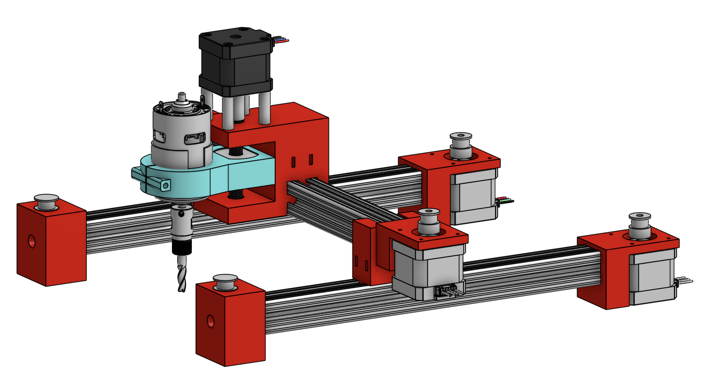
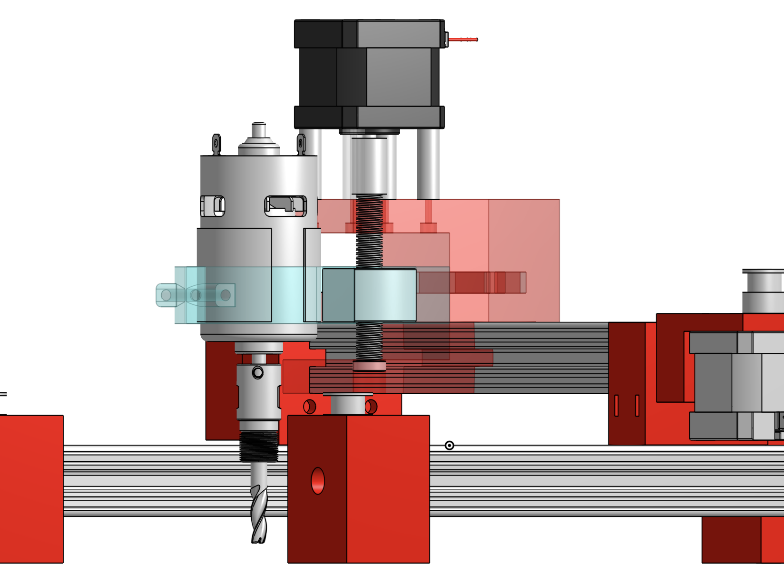
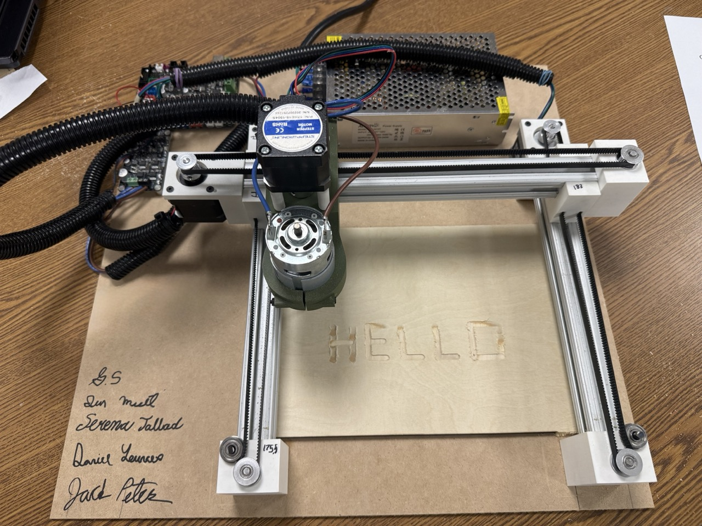

← Back to projects
Mechanical Design · Mechatronics
3-Axis CNC Mill
Designed and built a three-axis CNC prototype with belt-driven slides, four stepper motors, a DC spindle motor, and Arduino Mega-based motion control.

Project overview
This team-of-four project focused on building a Cartesian motion system that combines mechanical design, motors, and embedded control.
Design & development
Highlights of the design and build process:
- Modeled and assembled mechanical components using SolidWorks.
- Integrated three-axis motion using four stepper motors, belt-driven slides, and a DC spindle motor.
- Used an Arduino Mega for motion control.
Photo gallery


Video demonstration
Video placeholder
Add a demonstration video here.
Testing & results
Add your actual measurements, testing observations, outcomes, and lessons learned. This section is intentionally left open rather than inventing results.